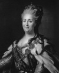

Büyük Catherine (1729-1796) otuz yıldan uzun bir süre boyunca Rusya’nın imparatoriçesi oldu. Avrupa politikasında güçlü bir figürdü. Ülkesinin büyük bir kıtasal güç haline gelmesine katkıda bulundu. Edebiyat ve sanatı destekledi. Diğer taraftan düzinelerce aşığı ile yaşadığı ilişki nedeniyle eleştirildi.

Almanya’da doğan Prenses Catherine, Rus tahtının varisi olan 3. Peter (1728-1762) ile 1745 yılında evlendi. Peter 1762 yılında tahta geçti. Ne var ki zayıf ve sevilmeyen bir liderdi. Tahta çıkışından altı ay sonra düzenlenen bir darbe ile görevden alınıp öldürüldü. Kocasının ölümünün ardından Catherine yeni monark oldu.
Catherine’in dönemi, sınırların hızla genişlediği ve büyük askeri zaferlerin kazanıldığı bir zaman aralığı oldu. Kırım’ı ele geçirdi. Ülkesinin sınırlarını Doğu Avrupa’ya kadar genişletti. Alaska’daki ilk Rus yerleşimini kurdu (bu bölge 1867 yılında ABD’ye satılacaktı).
Catherine, Rusya’yı bir sanat merkezi haline getirmek istiyordu. Kendi kişisel koleksiyonu için İngiltere ve Almanya’dan tablolar getirtti. Bu koleksiyon Saint Petersburg’daki Hermitage Müzesi’nin çekirdeğini oluşturacaktı. Aydınlanma çağının önde gelen düşünürleri ile dost oldu. Bunların arasında Fransız yazar Voltaire (1694-1778) de vardı. Bu dönem, Rus Aydınlanması olarak adlandırıldı. Rus yazar ve sanatçıların, ülke üzerinde çok önemli etkileri oldu.
Avrupa’daki erkek monarkların hepsi değilse de bir çoğunun olduğu gibi Catherine’in de bir dizi aşığı vardı. Bu konuda adı epeyce kötüye çıkmıştı. Zira genç erkeklerle olan ilişkisini gizlemek için pek çaba harcamıyordu. En azından bir tane gayrimeşru oğlu olduğu bilinmektedir. Hatta geleceğin çarı 1. Paul’ün (1754-1801) bile 3. Peter’den değil bir Rus kontundan olma ihtimali vardı. Catherine’in seks hayatı ile ilgili pek çok dedikodununsa siyasi düşmanları tarafından uydurulduğu düşünülmektedir.
Catherine altmış yedi yaşında felç geçirmiş ve Saint Petersburg’da hayatını kaybetmiştir.
Ek Bilgiler
1- Amerikan Devrimi sırasında imparatoriçe idi. Rusya’nın devrimcileri açıktan desteklememesine rağmen İngilizlerin Atlantik’te denizciliği sınırlama çabalarına karşı donanmasını göndererek dolaylı yoldan onlara destek vermiştir.
2- Asıl adı Sophia Augusta Frederika’dır. Catherine adını Peter’le evlendikten sonra almıştır.
3- 1788-1790 yılları arasında kuzeni İsveç kralı 3. Gustav (1746-1792) ile savaşmıştır.